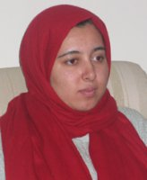

|
|
|
Browsing
Contact Us |
Campaigners |
Face to Face |
Tribune |
Interview |
News |
On the Web |
One Million |
Report
Farsi | Français | German | Italian | Spanish | العربية Also in this section
|
 A Report from Prison Clear Examples of InequalityFriday 23 November 2007 By: Maryam Hosseinkhah* Translated by: Roja bandari This is prison; the women’s ward of Evin prison. This is not my first time here; not the first time I’ve come to Evin. The first time, I came here as a journalist. Alongside the warden, I walked from cell to cell to listen to the stories of women who were here on charges of addiction, prostitution and murder. I heard only a few words from each woman, only what the presence of the warden allowed. That day all the inmates spoke highly of prison conditions in front of the officials and said they had no problems but as I was leaving they slipped a crumpled piece of paper in my pocket that read: "Help us! No one thinks about us here.” The second time I too was a prisoner. Just like everyone else in the ward. While I was in the general ward, thirty other women’s rights activists were in solitary confinement. I was concerned and disoriented, lost between the uncertain fate of my friends and the misery of the inmates I used to write about. That day I was merely a guest who would soon be able to leave. This time, the third time, however, everything is different. This time because of a $100,000 bail [which I can not afford], I’m just like one of them; one of the hundreds of women shut up inside the high walls of Evin with no-one to help them. The law doesn’t protect them; neither do their families, nor does anyone else in the world. It is exactly here that you can truly understand the meaning of powerlessness: in the eyes of these women who could have been at home with their children right now, if only the law were slightly more just. Women who bear no resemblance to our clichés about woman inmates; some of these women could not cope with the unequal laws and took the law into their own hands and are now considered law-breakers by our legislators. Some are locked up as a result of a lack of education and poverty that has always plagued women; some others, like Leila, are here because they asked the court for their nafagheh1. It’s hard to believe this; Leila is 47 and for the past twenty years she has been trying to get some financial support from her husband who left her and their two children one of whom was born with Down syndrome. No court has helped her yet. Leila gazes at the floor with eyes filled with tears. “Less than two years after we married I found out that my husband had another wife before me. When my second child was born with Down syndrome, he left us. I was alone with two young children one of whom was disabled and I had to pay for her medical expenses. My husband has a house, a car, and money. I only wanted enough to pay for these two poor children. But he wouldn’t pay and no court would declare him responsible and make him pay." When I ask her, “why didn’t you get a divorce?”, she replies “I’m still hopeful that maybe the law will side with me and I can get the financial support for my children.” She says, “I’d be happy with only $10,000 for those 20 years, but he won’t even give us that.” Two days ago in court, Leila’s husband declared that he will not pay for them and attacked and beat Leila and the kids. For disturbing the peace in his courtroom, the judge sent both Leila, who was beaten, and her husband, who had done the beating, to jail; and not just to any jail! The Evin prison! Her husband posted bail that night and was immediately released. But Leila is here with teary eyes and a gaze full of disbelief, waiting so maybe someone will come and post bail and free her… Every time we talk about lack of women’s rights, they throw mehrieh and nafagheh in our face. We are only too familiar with the sentence “you have all of this, what else do you want?” But Leila and others like Leila neither have a mehrieh2 to live on nor a nafagheh. Leila’s experience tells us if a man so wishes, he can withhold nafagheh and no law or court can make him pay. Mehrieh or nafagheh—which are sometimes impossible to collect—shouldn’t be used as a pretext to neglect undeniable rights like equality in dieh3, inheritance, testimony, divorce, etc. Leila is one of hundreds of women whose lives are ruined because of the unequal laws and all she is left with is the sight of a metal ceiling and never-ending walls. As I’m writing these words, a few steps away from me a young woman whose body is completely bruised is weeping. It’s more like a scream. She bangs her head against the wall, and shouts. She tries to suffocate herself with a scarf she has tied around her neck. Maybe it is the complete loss of faith in law and justice that has brought her so close to death. A few nights ago, when I was being threatened with arrest, I thought about what I can do to survive in prison. But now I feel I might run out of time and not be able to speak to all of these women each of whose stories is a clear example of inequality. 1. Nafagheh: The money that a man is obligated to pay his wife and children for their expenses. 2. Mehrieh: The amount of money that the woman is entitled to when entering a marriage contract. 3. Dieh: The amount of money paid as compensation for a physical injury or death. A women’s dieh is half of a man’s. *Note: This article was written by Maryam Hosseinkhah from Evin Prison. Maryam Hosseinkhah was called to court on November 17 in relation to her activities and writings in defense of equal rights for women. On the 18th, a very high bail order was issued in her case. Because of her inability to post this high bail, an arrest warrant was issued and she was transferred to Evin Prison, Ward 3, which is general ward for non-violent offenders. Read updates about the case of Maryam and others currently in detention for their activities in support of the Campaign, namely Ronak Safarzadeh and Hand Abdi in Kurdistan, in the Campaigners section of this website |